· CAT VIRTUAL · REC'N'PLAYRoteiros sugeridos
Quatro roteiros prontos, gerados pelo totem CAT Virtual no Rec'n'Play. Escolha um, veja a ordem de visita e baixe em PDF.
O Recife Antigo é o bairro mais histórico da cidade, erguido numa ilha entre o rio Capibaribe e o mar. Ruas estreitas, casario colonial e o Marco Zero — ponto de partida de todos os roteiros aqui — reúnem séculos de história a poucos passos um do outro.
O essencial do Recife Antigo em cerca de 1 hora
8 paradasPraças, fortes e a primeira sinagoga das Américas
8 paradasMuseus, bonecos gigantes e o berço do frevo
16 paradasOs pontos históricos e culturais do Recife Antigo, sem pressa
Linhas 032 · 041 · 064 · 117 · 516 · 521 atendem a parada do Marco Zero / Av. Alfredo Lisboa — confirmadas na ferramenta oficial da Grande Recife (RUMO).
Fim de tarde, quando o calor diminui e o casario colonial ganha luz dourada — e boa parte dos museus ainda está aberta.
Protetor solar, água e calçado confortável — o trajeto é majoritariamente a céu aberto, sobre calçamento de pedra.